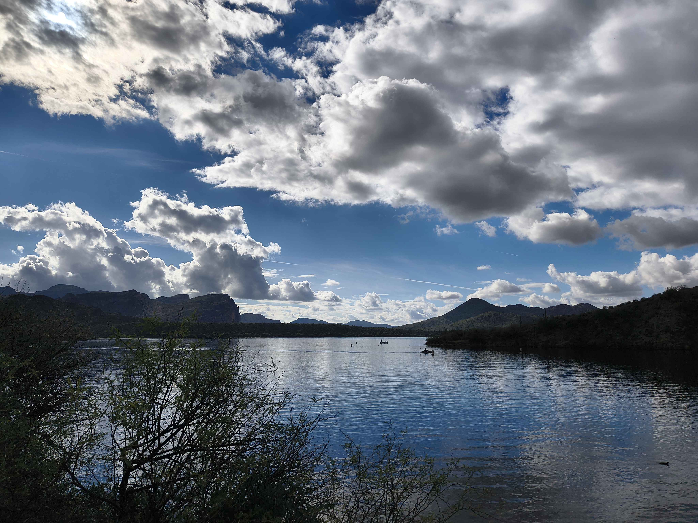
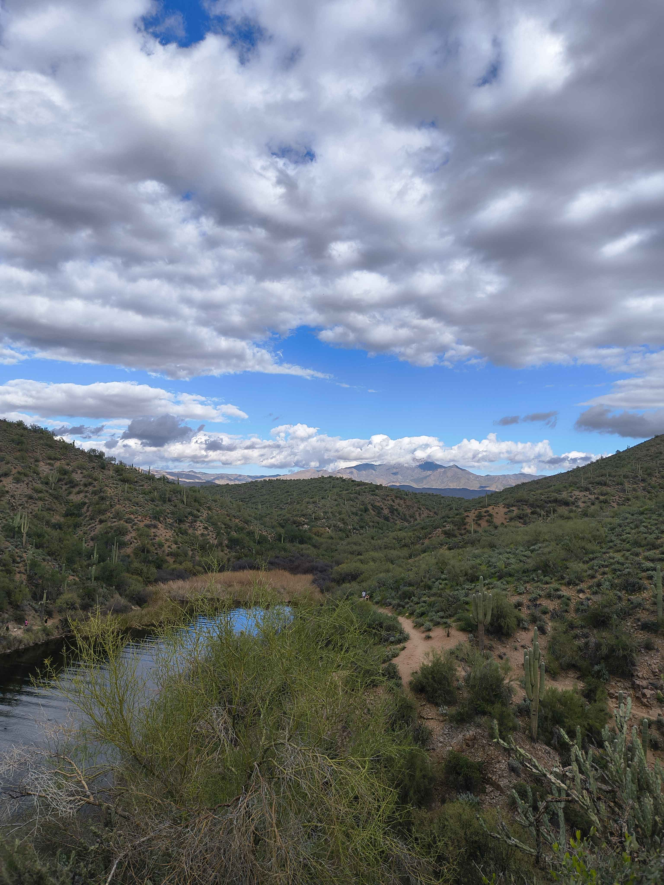
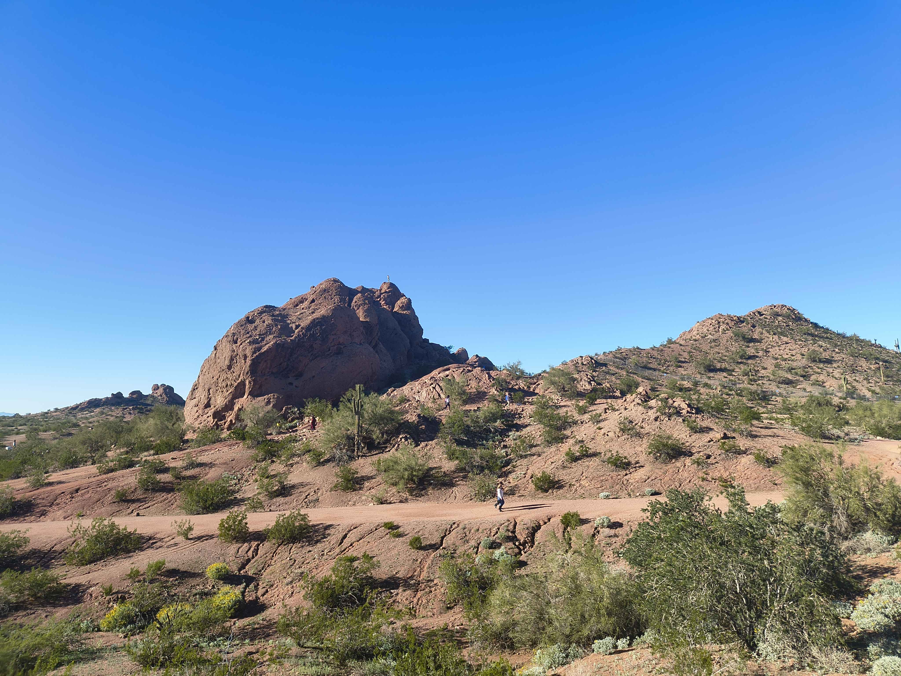
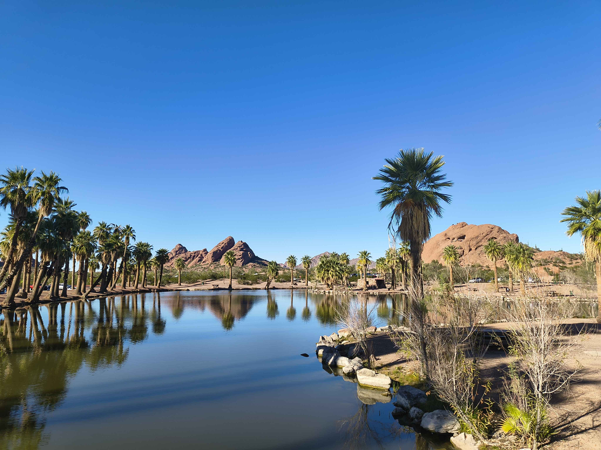
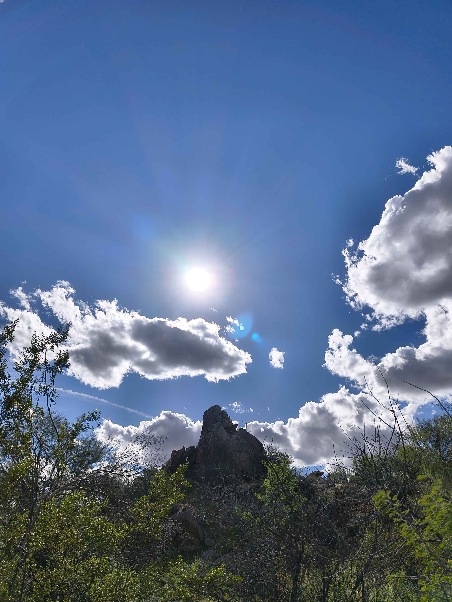
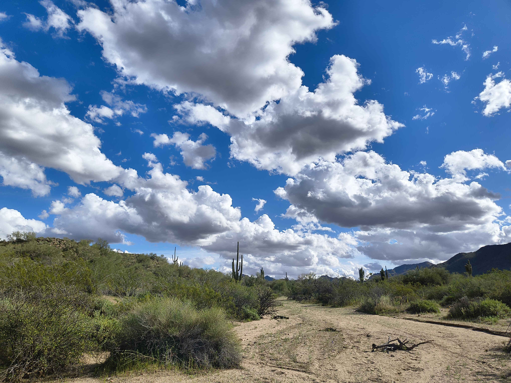
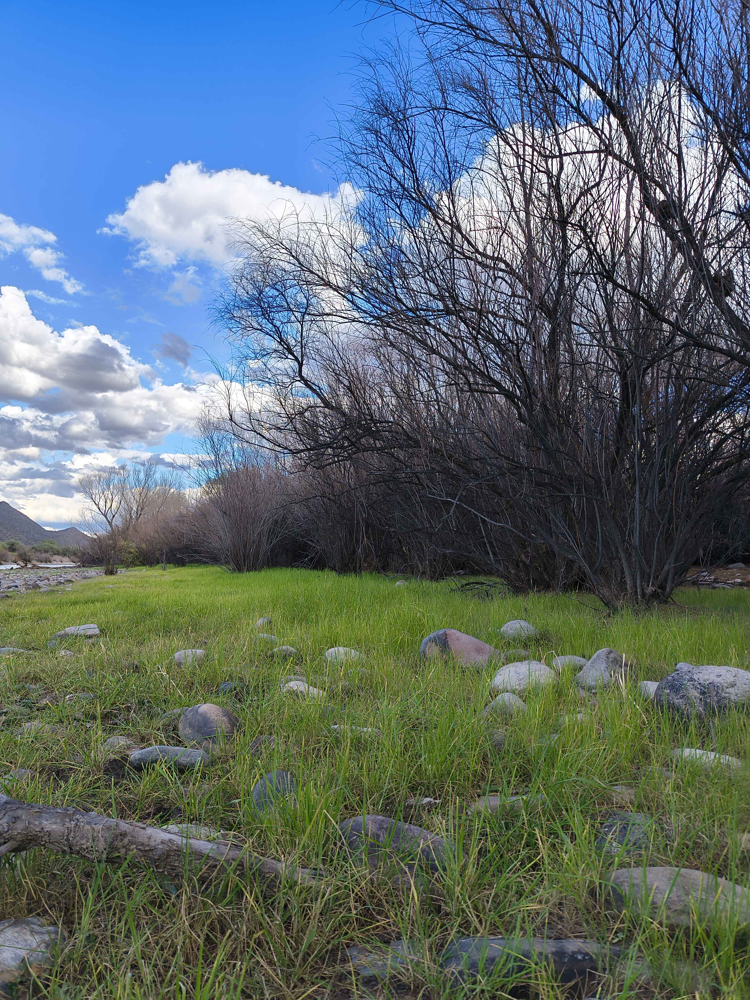
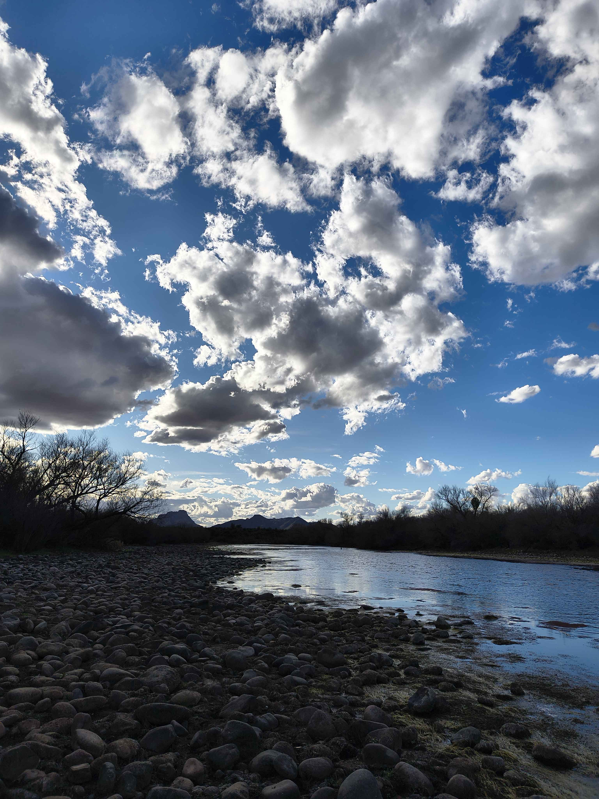

Trails
Arizona has trails for every type of hiker, from easy scenic walks to more challenging desert routes. This page highlights trail difficulty levels and features some of my favorite outdoor areas, including Saguaro Lake, Papago Park, and the Salt River area.
Beginner
Shorter and easier trails with little elevation gain and more manageable terrain.
- Great for new hikers
- Usually shorter distance
- Easier to follow
Intermediate
Moderate trails with some elevation gain, uneven paths, and longer distances.
- Good for hikers with some experience
- May include rocky or sandy terrain
- Requires more endurance
Advanced
Longer, steeper, and more physically demanding hikes for experienced hikers.
- Greater elevation gain
- More time on trail
- Best with planning and extra water
Saguaro Lake Area
The Saguaro Lake area offers wide-open water views, surrounding mountain scenery, and a peaceful desert atmosphere. It is a great place to enjoy Arizona landscapes with a different look from the typical dry trail setting.


Papago Park
Papago Park is one of the most recognizable hiking areas in the valley. Its red rock formations, desert paths, and easy accessibility make it a good place for beginners and anyone looking for a classic Arizona hike.


Salt River Area
The Salt River area combines rocky riverbanks, desert vegetation, open skies, and unique scenery that changes throughout the trail. It is one of my favorite areas because it feels both peaceful and adventurous at the same time.




How to Choose the Right Trail
Before choosing a hike, think about the trail length, elevation gain, weather, and your own experience level. If you are new to hiking, start with easier trails and build confidence before moving on to longer or steeper routes.
Need help getting ready? Visit the Gear & Tips page for hiking essentials, safety reminders, and beginner-friendly advice.